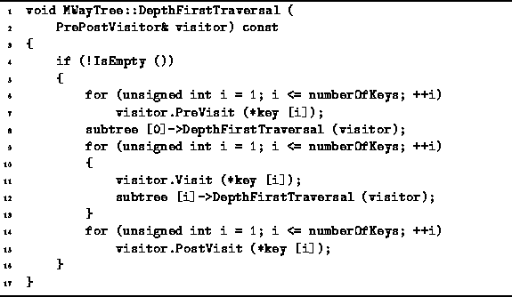
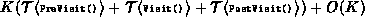

Data Structures and Algorithms
with Object-Oriented Design Patterns in C++
Data Structures and Algorithms
with Object-Oriented Design Patterns in C++Whereas inorder traversal of an N-ary tree is not defined for N>2, inorder traversal is defined for an M-way search tree: By definition, the inorder traversal of a search tree visits all the keys contained in the search tree in order.
Program  is an implementation of
the algorithm for depth-first traversal of an M-way search tree
given in Section .
The keys contained in a given node are visited
(by calling the Visit member function of the visitor)
in between the appropriate subtrees of that node.
In addition,
the PreVisit function is called for each key contained in a node
before traversing any of the subtrees of that node
and the PostVisit function is called for each key
in the node after all the subtrees have been traversed.
is an implementation of
the algorithm for depth-first traversal of an M-way search tree
given in Section .
The keys contained in a given node are visited
(by calling the Visit member function of the visitor)
in between the appropriate subtrees of that node.
In addition,
the PreVisit function is called for each key contained in a node
before traversing any of the subtrees of that node
and the PostVisit function is called for each key
in the node after all the subtrees have been traversed.

Program: MWayTree Class DepthFirstTraversal Member Function Definition
It is clear that the amount of work done at each node during the course of a depth-first traversal is proportional to the number of keys contained in that node. Therefore, the total running time for the depth-first traversal is , where K is the number of keys contained in the search tree.
 Copyright © 1997 by Bruno R. Preiss, P.Eng. All rights reserved.
Copyright © 1997 by Bruno R. Preiss, P.Eng. All rights reserved.